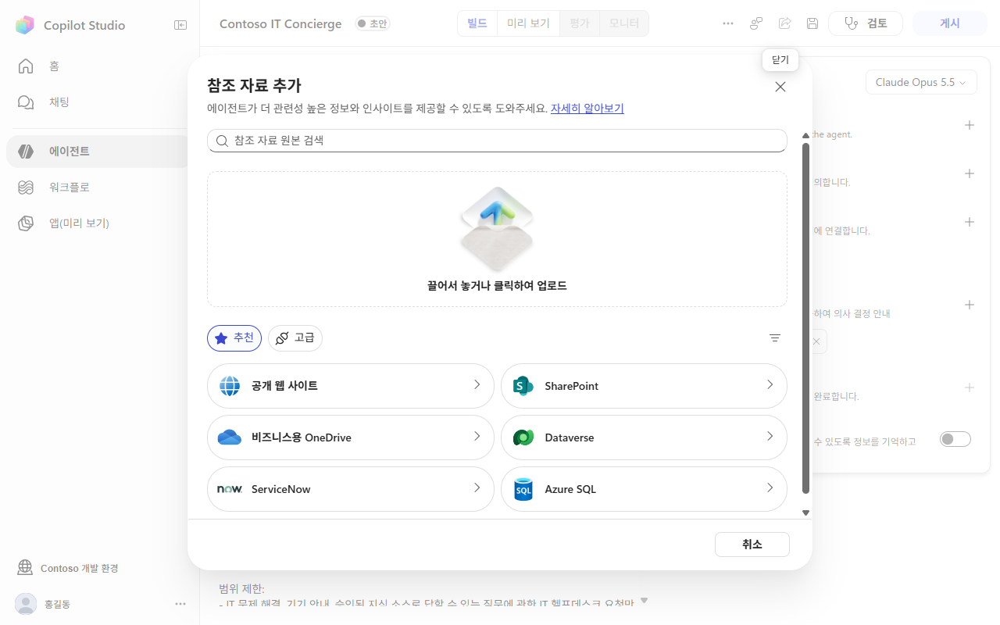
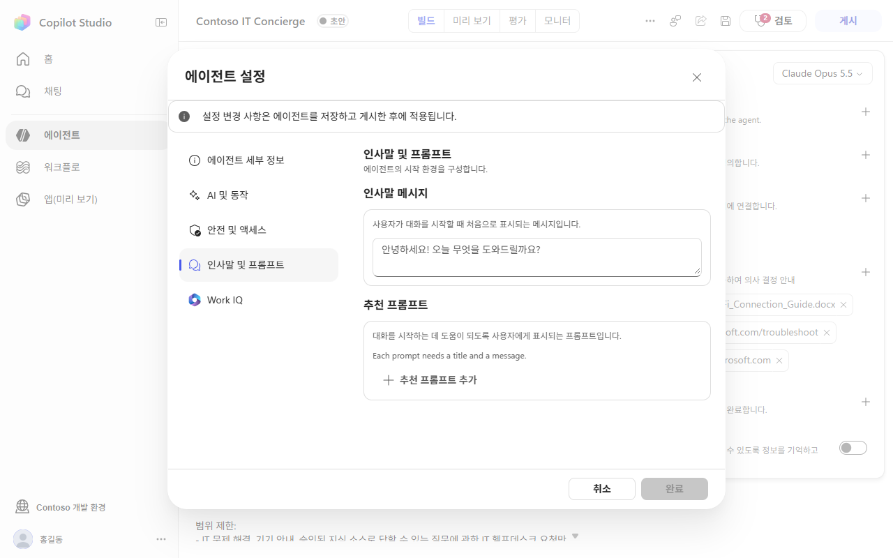
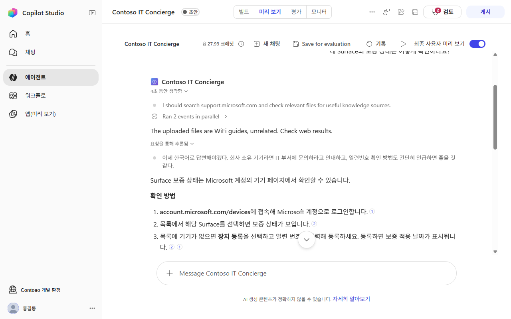
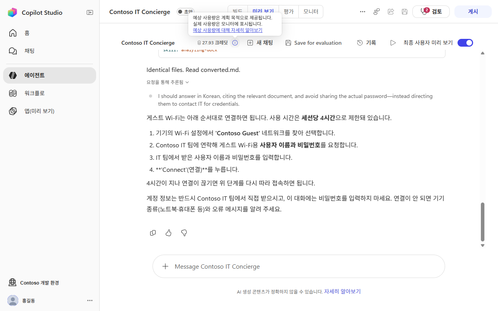

정해진 길을 가는 핸즈온,
실제 화면 위의 클릭스루로 만들면 어떨까?
실제 Copilot Studio 한국어 화면을 따라 클릭하고, 오른쪽 가이드를 읽고, 입력합니다. 테넌트도, 라이선스도, 크레딧도 필요 없습니다.
왜 이런 걸 만들었나
핸즈온은 보통 각자 환경에서 가이드를 한 줄씩 따라가는 방식입니다. 그런데 학습 목표가 "정해진 경로를 한 번 걸어 보는 것"이라면, 목적 달성 관점에서는 인터랙티브 클릭스루 데모와 크게 다르지 않습니다.
어떻게 동작하나
서버가 필요 없는 정적 페이지입니다. HTML 한 장, 데이터 파일 한 개, 스크린샷이 전부입니다. (v1 31장, v2 34장)
실제 화면
한국어 UI로 로그인된 Copilot Studio를 직접 조작해 캡처했습니다. 이름·환경 정보는 가려서 저장했고, 응답과 인용도 실제 에이전트가 생성한 결과입니다.
가이드 패널
단계별 체크리스트, 복사 블록, 힌트, 대신 해주기, 이전 단계 이동. 정해진 경로를 벗어난 클릭은 안내로 되돌립니다.
데이터로 정의
모든 단계는 lab-data.js 한 파일에 있습니다. 클릭 영역 좌표와 가이드 문구만 바꾸면 새 미션을 추가할 수 있습니다.
{ id: 'k-urls', title: '공개 웹 사이트 2개 추가',
actions: [
input('s07-url1.png', [266, 246, 635, 30], '링크 #1 입력', URL1),
click('s08-url1-add.png', [912, 245, 96, 32], "'추가' 클릭"),
...
] }
클릭만 하고 끝나지 않게 v2
정해진 길을 따라가기만 하면 남는 게 없습니다. v2는 클릭 사이사이에 생각하고, 틀려 보고, 직접 고쳐 보는 순간을 넣었습니다.
예측 후 확인
결과를 보기 전에 먼저 고르고, 실제 결과와 비교합니다. 예측이 틀린 곳이 가장 오래 남습니다.
체크포인트
맞혀야 다음으로 넘어갑니다. 오답에는 이유를 알려 주고, 두 번 틀리면 정답과 해설을 보여 줍니다.
직접 고쳐 보기
복사해 붙이는 대신 지침에서 '범위 제한'을 직접 지우고, 실제로 실행해 둔 결과를 비교합니다.
힌트 마찰
힌트를 본 뒤에만 "대신 해주기"가 열립니다. 사용 횟수는 완료 화면에 기록됩니다.
내 말로 정리
"HR 도우미로 바꾼다면?"을 직접 쓰게 하고, 빠진 요소를 키워드로 점검한 뒤 모범 답안을 보여 줍니다.
빠르게 지나간 단계
4초 안에 넘긴 단계를 완료 화면에서 다시 보도록 안내합니다.
짧은 영상 (Remotion)
처음에는 이 랩의 사용법(37초)을, 새 개념이 나오는 단계 앞에서는 "이게 뭐예요? 왜 하는 거예요?" 클립(15초)을 보여 줍니다. 처음 볼 때는 끝까지 봐야 시작되고, 앞으로 감기는 막혀 있습니다.
화면 미리보기
아래 화면은 모두 실제 Copilot Studio에서 캡처한 이미지입니다.




솔직한 한계와 쓰임새
클릭스루가 실제 핸즈온을 전부 대체하지는 못합니다. 어디에 쓰면 좋은지를 함께 정리했습니다.
한계
- 화면이 스크린샷이라 UI가 바뀌면 다시 캡처해야 합니다. (캡처 대상은 Copilot Studio 프리뷰 화면)
- 응답은 한 번 생성된 결과입니다. 매번 달라지는 LLM의 특성은 보여주지 못합니다.
- 오류나 권한 문제를 직접 겪고 푸는 경험은 얻을 수 없습니다.
- 이 샘플은 SharePoint 연결과 솔루션 확인 단계를 포함하지 않습니다.
잘 맞는 곳
- 환경 준비·라이선스·관리자 설정처럼 막히기 쉽고 비용이 드는 구간
- 행사·고객 교육처럼 모두가 같은 경로로 완주해야 하는 자리
- 실습 전 예습, 실습 후 복습용 셀프 가이드
- 단계별 클릭·힌트·이탈 데이터를 모아 막히는 곳을 찾고 싶을 때